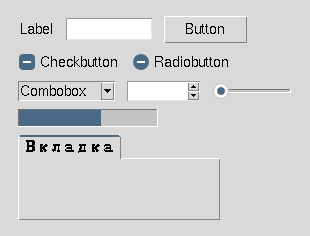
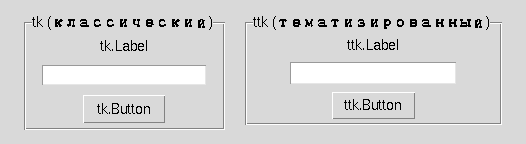
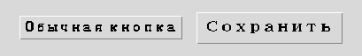
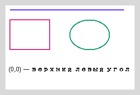
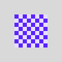

tk и ttk: классические и тематизированные виджеты
Начиная с этого раздела в новых примерах мы предпочитаем ttk там, где существует тематизированный аналог — но сначала посмотрим, как выглядят виджеты вместе.
Витрина виджетов Tkinter
Прежде чем разбирать детали каждого виджета отдельно (разделы 16.13–16.22) — вот как они выглядят вместе, в одном настоящем окне:

Дальше в этой главе каждый из этих виджетов получит отдельный раздел с собственными состояниями и примерами кода.
tk и ttk — два набора виджетов
| tk | ttk | |
|---|---|---|
| Что это | классические виджеты Tkinter | тематизированный (themed) набор поверх Tk |
| Импорт | import tkinter as tk | from tkinter import ttk |
| Внешний вид | фиксированный классический стиль | может адаптироваться под тему/платформу |
| Стилизация | fg=/bg= | через ttk.Style() |

import tkinter as tk
from tkinter import ttk
root = tk.Tk()
ttk.Label(root, text="Современный ttk.Label").pack()
ttk.Button(root, text="ttk.Button").pack()
ttk.Entry(root).pack()ttk.Label, ttk.Button, ttk.Entry и другие тематизированные виджеты там, где существует тематизированный аналог. Но ttk не заменяет весь Tk целиком — виджеты вроде tk.Text, tk.Canvas и tk.Menu остаются классическими, потому что у них нет тематизированного аналога.tk-виджеты понимают fg=/bg= напрямую. Виджеты ttk стилизуются иначе — через объект ttk.Style() (следующий раздел). Не переносите привычки классического Tk на ttk буквально.from tkinter import * — не в продакшн-стиле
from tkinter import *
root = Tk()
Button(root, text="Кнопка") # откуда взялся Button — неочевидноimport tkinter as tk
from tkinter import ttk
root = tk.Tk()
ttk.Button(root, text="Кнопка") # источник имени виден сразуfrom tkinter import * работает, но затрудняет чтение кода: непонятно, какому модулю принадлежит каждое имя, и легко случайно перекрыть встроенные имена Python. В примерах курса, начиная с этой главы, — только явные импорты.ttk.Style() — стилизация тематизированных виджетов

style = ttk.Style()
print(style.theme_use()) # активная тема, например 'clam' или 'default'
style.configure(
"Accent.TButton",
font=("TkDefaultFont", 11, "bold"),
padding=8,
)
button = ttk.Button(
root,
text="Сохранить",
style="Accent.TButton",
)style.configure(...) принимает только опции, которые поддерживает конкретный виджет и активная тема Tk — это не универсальный CSS-подобный язык стилей, где можно менять произвольное свойство произвольного элемента. Именованный стиль ("Accent.TButton") применяется через параметр style= у самого виджета.#5B24F9
#DB2777
#059669
#B45309
#5B24F9 в коде, взгляните на реальный цветовой образец выше — так проще запомнить и различать похожие оттенки, чем по одним шестнадцатеричным кодам.Canvas — рисование произвольных фигур

canvas = tk.Canvas(root, width=260, height=170, background="white")
canvas.pack(padx=10, pady=10)
canvas.create_line(10, 10, 240, 10, fill="#5B24F9", width=2)
rect_id = canvas.create_rectangle(10, 30, 90, 90, outline="#DB2777", width=2)
canvas.create_oval(130, 30, 210, 90, outline="#059669", width=2)
canvas.create_text(130, 130, text="(0,0) — верхний левый угол")(0, 0) — верхний левый угол Canvas. x растёт вправо, а y растёт вниз — это противоположно привычной математической системе координат, где y растёт вверх. Так устроена экранная система координат в большинстве графических библиотек, не только Tkinter.rect_id = canvas.create_rectangle(...) — Canvas хранит нарисованные элементы и возвращает идентификатор, по которому потом можно изменить или удалить именно этот элемент (canvas.itemconfig(rect_id, ...), canvas.delete(rect_id)) — пригодится для будущих игровых интерфейсов.Canvas — обычный виджет Tkinter для рисования произвольных фигур внутри окна приложения, а не отдельный модуль с собственным миром координат, как turtle (главы 6–7). Это краткое знакомство, а не полноценный курс по Canvas.PhotoImage — изображения в виджетах

image = tk.PhotoImage(file="icon.png")
label = ttk.Label(root, image=image)
label.pack()def build_ui():
image = tk.PhotoImage(file="icon.png") # локальная переменная функции
label = ttk.Label(root, image=image)
label.pack()
build_ui()# Окно открывается, но картинка не отображается —
# на месте изображения пусто.После завершения build_ui() локальное имя image исчезает. Если на объект PhotoImage больше не остаётся Python-ссылок, объект может быть освобождён — виджет хранит ссылку на него только внутри Tcl, а не в самом Python. Поэтому приложение должно хранить ссылку на PhotoImage столько времени, сколько изображение должно отображаться.
class App:
def __init__(self, root):
self.logo_image = tk.PhotoImage(file="icon.png") # хранится в self —
self.logo_label = ttk.Label(root, image=self.logo_image) # живёт, пока жив self
self.logo_label.pack()